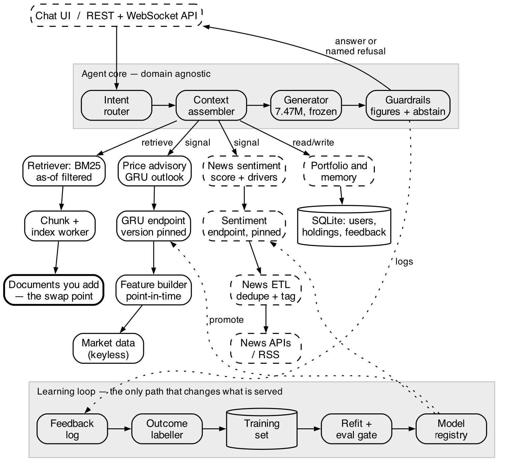

“ALFA: Adaptive Learning Framework for Agents — an agent that learns
from its own outcomes, instantiated on a financial corpus”
Name
Roll No.
Batch
ADITYA PACHOURI
23103025
B1
RISHABH KAPUR
23103101
B4
ADITYA PRATAP SINGH
23103091
B4
Under the Supervision: Ms. Silki Kharaliya
JIIT logo goes here — save the institute logo as
docs/synopsis/logo.png and re-run ./build.sh. Everything else on this page is
already positioned for it.
May -2026
Submitted in partial fulfilment of the Degree of
Bachelor of Technology in Computer Science Engineering
DEPARTMENT OF COMPUTER SCIENCE ENGINEERING & INFORMATION TECHNOLOGY
JAYPEE INSTITUTE OF INFORMATION TECHNOLOGY, NOIDA
1. Motivation Behind the Project
An agent built on a foundation model is frozen on the day it ships. The accepted way to improve one
is to retrain or replace the model underneath it — expensive, and unattributable: when the
answers change, nobody can say whether the product improved or the vendor swapped the weights.
ALFA is a framework, not one application. It is an agent layer that attaches to a body of
data, answers questions over it, and improves from its own interaction, outcomes and feedback
while the foundation model's weights stay frozen. The domain enters at one seam only — the
documents you add, plus one numeric head per quantity that domain measures (Figure 1) — so a
second domain is a new data pack, not a new agent.
It is currently instantiated on a financial corpus we collected ourselves (100.8M tokens,
4,674 documents, 101 instruments), because finance is the harshest cheap test of both promises:
answers contain numbers that are either right or wrong, and a dated public record exists to check
them. Nothing in the loop is financial. The research question is narrow and testable:
can an agent improve its decisions and guidance from interaction, outcomes and feedback without
continuously retraining its underlying foundation model?
2. Type of Project
Research cum Development Project
Research → adaptation from feedback with frozen weights, measured against
non-learning controls, over a transformer stack written from first principles (hand-derived
autograd, no deep-learning framework)
Development → the framework packages — agent core, retrieval, registry,
database — an offline serving layer and a dashboard over it
Domain-agnostic: one data seam; finance is the reference pack, not the product
Constraint: no paid API and no API key anywhere — the model is built, not
called
3. Critical Analysis of Research Papers & Gaps
Paper
Key Idea
Gap
One-Line Summary
LSTM / GRU forecasting (2020)
Sequence model over a numeric history
Scored against weak baselines, not persistence
Useful head, easy to over-credit
FinBERT / domain sentiment (2021)
Domain text classification
Score never joined to the decision
Strong NLP, unconnected to advice
RAG / Fusion-in-Decoder (2020–22)
Generate from retrieved evidence
Improves fluency, not truth of figures
Grounded in form, not in fact
RLHF and adapter tuning (2021–22)
Learn from judged outcomes
Both change weights by gradient: cost, drift, no attribution
Effective, not attributable
LLM agent frameworks (2023–25)
Tools and memory around a hosted model
Nothing measures whether the agent improved
Plumbing, not learning
2
Gap Identified:
No framework puts these four together: (i) one data seam, so the same agent serves any
corpus, (ii) measurable improvement from its own logged outcomes with the foundation model's
weights frozen, (iii) every figure verified against the evidence that produced it, and a
named refusal when it is not, and (iv) every claim reported against the strongest cheap
baseline, negative results included.
4. Overall Design of Project
Architecture Overview

Figure 1 (Project Architecture)
The agent core, the guardrails and the learning loop know nothing about finance: a
domain reaches them through the bold box — the documents you add — and one numeric
head per quantity it measures. Dashed boxes are specified and queued (news and sentiment,
portfolio and memory, the eval gate, the REST/WebSocket layer, the dashboard); solid boxes run
offline in the repository today. The loop is the only path that changes what is served, and what it
changes is a threshold, a calibrator and a registry pointer — never a weight.
Data pack (finance today): feature builder, GRU volatility head, BM25 index over 44,811
chunks
Models: pure-NumPy transformer encoder–decoder, 7,472,192 parameters; GRU head,
202,755 — version-pinned in a registry behind an eval gate
Learning loop: SQLite feedback log → outcome labeller → refit of the cut, the
calibrator and memory
Serving and UI: FastAPI REST + WebSocket; Next.js and TypeScript dashboard (in progress)
Data layer: keyless public endpoints, official APIs and RSS, every URL and licence in a
manifest
5. Features Built & Languages Used
Framework Features (domain agnostic)
Conversational question answering over the attached corpus, offline, in about 1.3 seconds
Intent routing with an out-of-domain gate that refuses questions the data cannot answer
Guardrails: one unsupported number turns the answer into a named refusal, and an abstention cut
over calibrated confidence decides when to stay quiet
Point-in-time discipline: no record later than the as-of stamp is ever read
Experience store and per-user memory: one row per interaction — state, action, outcome,
reward, policy version
A version-pinned registry with an eval gate; swapping the data pack changes domain, leaving the
core, the guards and the loop untouched
407 automated tests covering every gate above
Finance Pack (the current instantiation)
A 100.8M-token corpus collected politely: robots.txt honoured, one request at a time, licence
and URL per file
Technical indicators computed by arithmetic, so the facts quoted are exact
Week-ahead volatility outlook from a GRU head, served only when it beats arithmetic by more than
its own noise; no buy or sell call — direction measured unpredictable
News sentiment, portfolio and holdings memory, and a streaming dashboard (in progress)
Languages & Technologies
Frontend: React, Next.js, TypeScript
Backend: Python (FastAPI)
ML/NLP: NumPy only — autograd, attention, GRU, tokeniser and optimiser written in
the project; no TensorFlow, PyTorch or HuggingFace in the model path
Database: SQLite · Testing: pytest
4
6. Proposed Methodology
Pipeline Flow:
Attach a data pack: a keyless public corpus, URL and licence recorded per file (today 100.8M
tokens of prices, filings and news)
Pretrain the encoder–decoder on that corpus as a masked language model
Build question–answer pairs over point-in-time snapshots; split by date, subject, wording
Fine-tune with Fusion-in-Decoder cross-attention, so it phrases evidence rather than recalling it
Add one numeric head per quantity the domain measures; keep it only if it beats the cheapest
baseline
Route to an intent, refuse if out of domain, rewrite into the trained phrasing
Assemble context from memory, passages and point-in-time state; verify every figure against it
Judge the turn, log one experience record, refit the cut and calibrator — weights frozen
Serve over REST and WebSocket; register each artifact behind the eval gate (in progress)
Steps 6–9 never mention the domain: a second domain repeats steps 1–5 only.
7. Algorithm / Description of Work
What is allowed to learn, and what is not
Four things stay separate, because the experiment collapses if any two are entangled:
knowledge (frozen encoder plus retrieved documents), reasoning (code, not weights),
policy (whether and when to answer — the only thing that learns) and memory (per
user, never shared). The encoder's parameters never appear in an optimiser — a testable
statement, and it has a test.
Adaptation Algorithm (the research contribution)
The agent is given a promise — answer only where you are at least p likely to be
right — and solves for the threshold that delivers it from its own logged outcomes:
c* = min { c : precision(confidence ≥ c) ≥ p } over the feedback log,
with p̂ = σ( a · logit(confidence) + b )
Only c*, a and b are fitted; no gradient is computed. That is what makes an
improvement attributable to feedback rather than to retraining.
Grounded Generator (frozen, domain agnostic)
7,472,192 parameters; masked-language pretraining, then supervised fine-tuning. The
decoder cross-attends to the evidence, and one unsupported number replaces the answer with a
refusal.
Numeric Head (finance pack)
A 128-bar window with six channels, standardised inside the window so nothing after
the as-of date can enter it; the output is the next five days' volatility in three buckets. 202,755
parameters over 143,546 windows from 101 instruments, served only when its recorded accuracy beats
persistence by more than one standard error. Five-day direction measured unpredictable, so
there is no BUY / HOLD / SELL output.
5
8. Division of Work Among Students
Member
Role
Contribution
Aditya Pachouri
Frontend Developer
UI design, dashboard, charts, API integration
Aditya Pratap Singh
Backend Developer
FastAPI REST and WebSocket, data collection, integration
Rishabh Kapur
ML Engineer
Autograd and transformer stack, numeric head, adaptation loop
9. Results
What was measured
Result
Feedback-driven adaptation, weights frozen
Keeps its stated 60% promise to within 8.5 points, vs 16.7 for a fixed threshold and
29.2 for answering everything
Intent routing, out-of-domain gate
94.3% correct intent; refuses 12/12 out-of-domain questions at 88.5%
coverage
Rewriting into the trained phrasing
Exact match 33.5% → 73.5% on held-out wordings, frozen weights
Does the generator read its evidence?
Blanking the evidence costs +1.04 loss, swapping it +1.95; the first version
cost +0.018 and was ignoring it
Unsupported figures in answers
1.7% on trained wording, 4.7% on reworded
Numeric head, 28,676 held-out windows
Volatility: GRU 49.1% vs persistence 47.8%, majority 39.6%. Direction 35.7% vs 36.0%
— unpredictable, never advised on
Retrieval recall@5, 44,811 chunks
BM25 15.5%, hybrid 12.0%, dense 1.5% — the vector arm was dropped
407 tests passing; a full answer in ~1.3 s on a laptop CPU, offline, no API key
Observation:
The thesis holds in a narrow, defensible form: the agent learns when to speak, not what to
say — eight samples give only 1.77 distinct answers, so the wording has nothing to
improve.
The larger gain came from the input, not the loop: rewriting a question into wording the decoder
knows is worth 40 points against the loop's ~4.
10. Conclusion
ALFA trains its own foundation model and then improves from its logged outcomes without ever
retraining it. Every figure in an answer is checkable against the evidence that produced it, refusals
name their reason, adaptation is attributable because the weights are frozen, and a new domain
attaches at one seam — the corpus you add. The limitation is measured, not assumed: an
unfamiliar sentence shape is handled only 68% of the time. Finance is the first pack, not the
product — the end product is this framework with the news, portfolio, registry and serving
stages of Figure 1 completed.